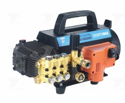

01
ELÉCTRICA
DCC-10 / 7 PH - 1,5 S4 / 60
Lavadora de presión eléctrica comercial de agua fría.
- Presión: 104 bar / 1500 psi
- Caudal máximo: 7,5 lpm / 1,98 GPM
- Potencia nominal: 1,5 kW, 2,0 HP, 220 V / 60 Hz
- Tipo de unidad: accionamiento directo
- Velocidad de entrada de la bomba: 1450 RPM
- Material de la cabeza de la bomba: latón
- Tamaño del envío: 48 x 30 x 31 cm
- Peso del envío: 25 kg